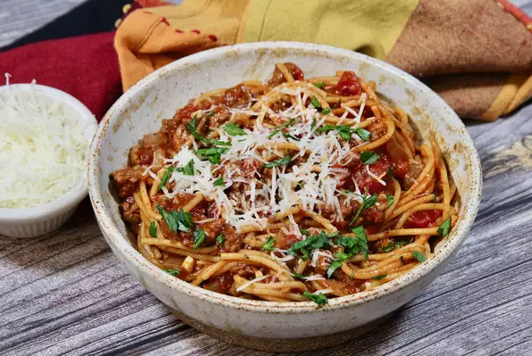

One-Pot Spaghetti

Description
My variation of an old Southern Living recipe - a double recipe will
fill a Dutch oven and make plenty for an extended family dinner.
Ingredients
- 1 pound of lean ground beef
- 1 large onion, chopped
- 2 cloves of garlic, minced
- 1 14-ounce can of tomato sauce
- 1 14-ounce can of petite diced tomatoes
- 2 cups of water
- 1 tablespoon of chili powder
- 1 teaspoon of dried oregano
- 1 teaspoon of ground black pepper
- 7 ounces of whole wheat spaghetti
- 1/4 cup of grated parmesan cheese
Steps
-
Heat a Dutch oven over medium-high heat. Cook and stir ground
beef, onion, and garlic until beef is browned and crumbly and
onion is translucent, 5 to 7 minutes. Drain and discard excess
grease.
-
Stir in tomato sauce, diced tomatoes, water, chili powder,
oregano, and black pepper. Bring to a boil. Cover, reduce heat,
and let simmer, stirring often, for about 30 minutes.
-
Break spaghetti into thirds and add to the pot; cover and simmer,
stirring often, until pasta is tender, about 20 minutes. Serve
topped with Parmesan cheese.